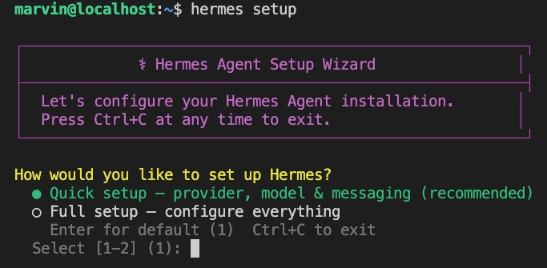
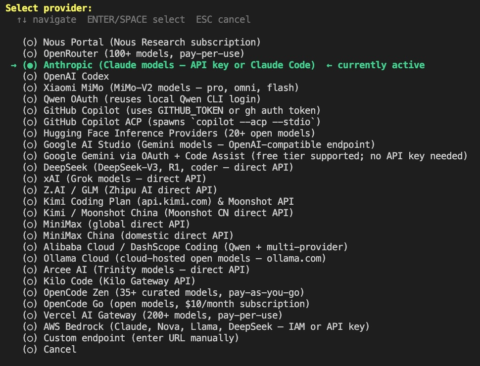
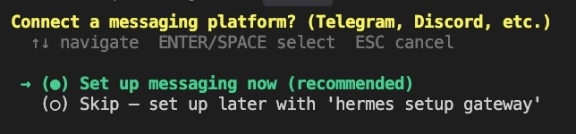
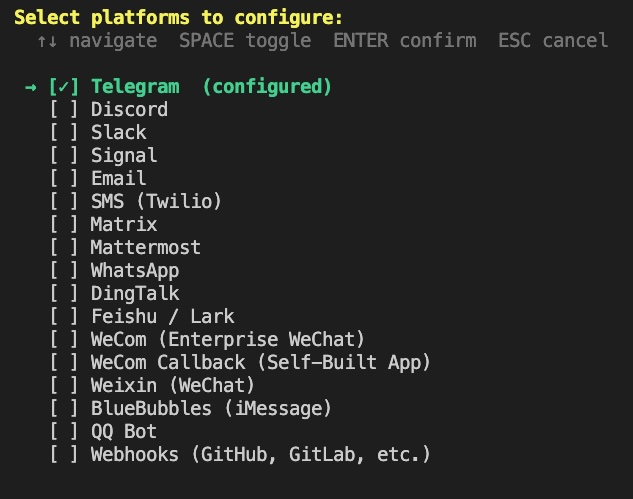
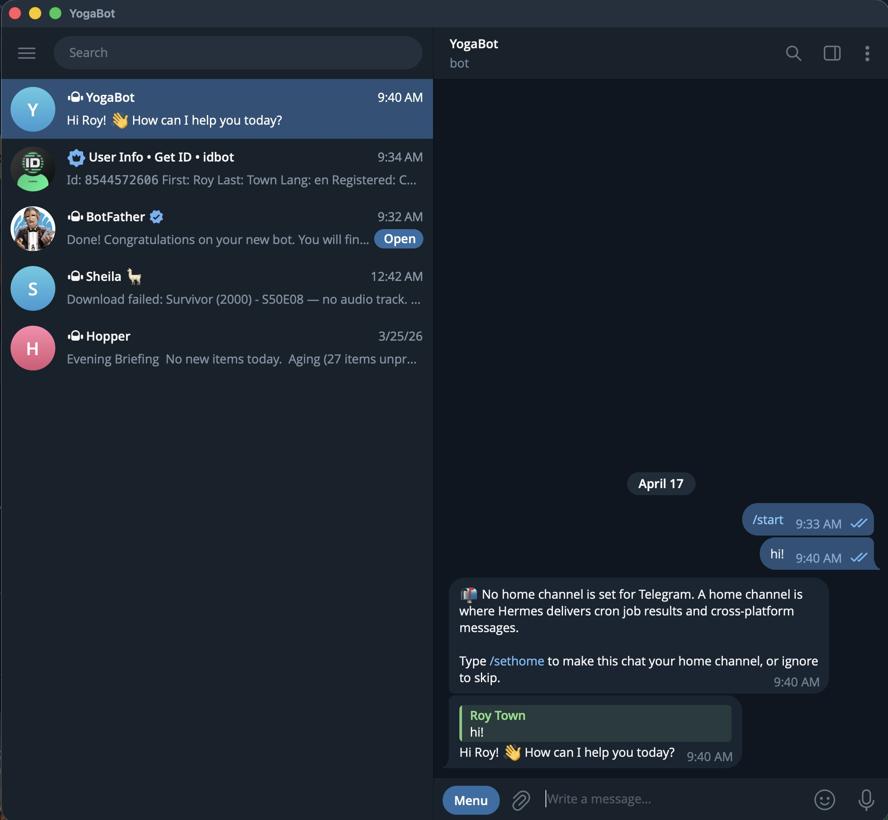
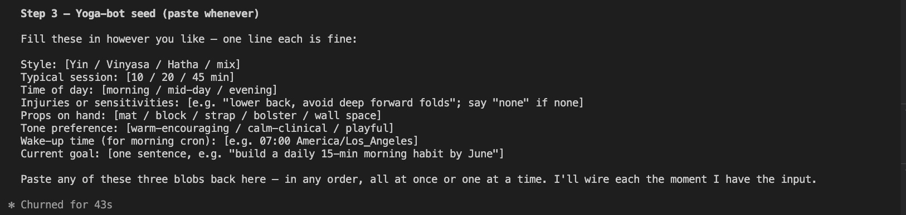
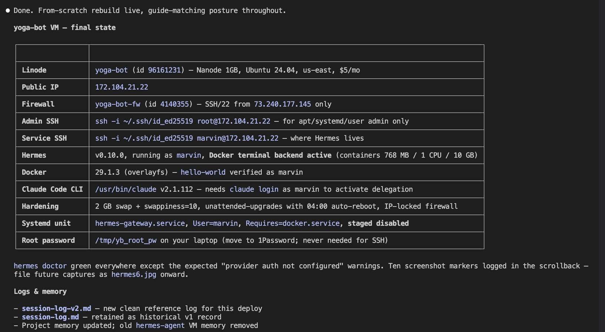

Hermes Setup Guide
From zero to "I can DM my agent" in ten minutes
Cohort 2 | April 2026
A clean, Hermes-native path from zero to "I can DM my agent on Telegram." No firewalls, no custom systemd units, no provider-fallback config, no troubleshooting for bugs you haven't hit yet. Just Hermes the way it was designed to be installed. Built from the
yoga-bot reference deploy we use in Session 11. If you want the hardened production version (IP-scoped firewall, non-root service user, Docker terminal backend, provider fallback chain, Claude Code delegation, the AQ-key gotcha, etc.), see "Graduate to the full guide" at the bottom.
Before You Start
What You'll Have
At the end of this
A Hermes agent running as a systemd service on a $5 cloud VM. You can DM it from Telegram. It remembers what you tell it across sessions. Voice memos transcribe automatically. For scheduled tasks, you just ask it in chat.
What You Need
Prerequisites
- A $5/month Linux VPS (Linode, DigitalOcean, Hetzner, Vultr, Lightsail). Ubuntu 24.04 LTS is the tested baseline.
- An SSH key on your laptop, added to the VPS at creation time. Run
ssh-keygen -t ed25519if you don't have one. - One LLM API key: Anthropic (
sk-ant-), OpenRouter (sk-or-), or Google AI Studio (AIzaSy…— not the newerAQ.keys, those are broken against Hermes as of v0.10.0). - Optional: a Telegram account if you want to DM the bot.
Heads up on Google AI Studio keys: if the key starts with
AQ., use OpenRouter instead. Hermes v0.10.0 returns HTTP 400 "Multiple authentication credentials" against AQ.-prefix keys. Older AIzaSy… keys work fine. This is a known upstream bug, not something you configured wrong.The Five Steps
-
SSH into your VPS
On your laptop:
ssh root@<your-vps-ip>
-
Install Hermes
On the VPS. This installs Hermes into
~/.hermes/, puts thehermescommand on your PATH, and syncs about 80 bundled community skills. Takes 2-3 minutes.curl -fsSL https://raw.githubusercontent.com/NousResearch/hermes-agent/main/scripts/install.sh | bash source ~/.bashrcVerify:hermes --version hermes doctordoctorshould be mostly green. Warnings about "provider auth not configured" are expected — you'll fix those next. -
Configure
Pick Quick setup when prompted. The wizard asks about your inference provider (paste your API key), default model (accept the suggestion unless you have a reason not to), and messaging platform (say yes to Telegram if you want to DM the bot).
hermes setup3a. The wizard opens with a Quick vs Full choice. Pick Quick — you can always run
hermes setupagain later to expand.3b. Pick your inference provider. Use whichever matches the API key you have.
Wizard intro — Quick vs Full setup.3c. The wizard asks if you want to wire up a messaging platform. Say yes if you want to DM the bot from your phone.
Provider picker — 30+ supported providers. Anthropic, OpenRouter, and Google AI Studio are the easiest starting points.3d. Hermes supports 18 messaging platforms. Telegram is the fastest path — no approval process, works globally, free.
"Connect a messaging platform?" — say yes for Telegram.If you said yes to Telegram: on Telegram, search for @BotFather, send
Messaging checklist — Telegram, Discord, Slack, Signal, WhatsApp, iMessage, and more./newbot, pick a name and a username (ends inbot). BotFather gives you an HTTP API token — paste it into the wizard. Then search for @userinfobot on Telegram, send/start, and paste the numeric user ID it replies with into the wizard. -
Install as a system service
So Hermes stays running across reboots and restarts itself if anything goes wrong:
sudo hermes gateway install --system sudo systemctl start hermes-gateway sudo systemctl status hermes-gateway --no-pagerThe last line should show
active (running). -
Test it
If you wired Telegram: send your bot any message. It should reply within a few seconds.
If you skipped Telegram: run

First round-trip with the yoga-bot reference deploy —/start, a "hi", the/sethomeprompt, and a personalized reply.hermeson the VPS — you're in a chat with your agent. Type something, press Enter. Type/helpto see the slash commands. To make this chat the home for scheduled messages (cron results, cross-platform summaries), send/sethometo the bot on Telegram, or run/sethomein the CLI.
What To Do Next
Hermes is running. From here the useful moves are all inside the agent, not the shell.

An example
USER.md seed — eight one-line fields. Hand-edit it, or let the agent capture it from your chat.
Seed Memory
Tell it about you
DM the bot something like "Hi, I'm Alex, I'm a [role], I work in [domain], I prefer [tone]." Its memory tool quietly captures this into
~/.hermes/memories/USER.md so every future session knows you.
Customize the Voice
Edit SOUL.md
Edit
~/.hermes/SOUL.md in a text editor. Replace the default template with a short description of who you want the agent to be. Changes take effect on the next message — no restart needed.
Schedule Something
Just ask in chat
DM the bot: "Every weekday at 8am, check Hacker News for anything interesting and summarize three stories." It wires up the cron itself. No systemd. No
crontab -e.
Try a Skill
/skills
Type
/skills in the chat to see what's installed. /skills browse opens the Skills Hub to install more. Skills live at ~/.hermes/skills/ — plain markdown, hand-editable.Delegate Coding to Claude Code (Optional)
Optional, recommended
Ride your Claude Pro/Max subscription
If you have a Claude Pro or Max subscription, install the
claude CLI on the VPS and run claude auth login --claudeai. Hermes routes heavy coding tasks to it via the bundled claude-code skill, using your subscription instead of API credits.This is permitted under Anthropic's policy because the Claude Code CLI handles its own auth. It also means your agent can do real coding work overnight — generate multi-week plans, refactor a project, write new skills — without racking up separate API bills.
Graduate to the Full Guide
This quickstart is deliberately minimal. You'll want the full production guide when any of these become real for you.
- You want the VPS itself hardened — firewall scoped to your IP, non-root service user, Docker terminal backend so shell commands run in ephemeral containers, auto-security-upgrades.
- Your LLM provider rate-limits you and you want a fallback model wired in.
- You want to run local inference via Ollama as a fallback or primary.
- You want to expose an HTTP endpoint from the VPS and need a static-token auth gate.
- You hit a specific bug (AQ-prefix Gemini keys, Ollama context-window trap, systemd crash loop) and need the documented workaround.
- You want to understand the cost envelope or plan for migrating providers later.

What the full production deploy looks like when everything is in place — firewall, Docker backend, Claude CLI delegation, staged systemd unit. The quickstart above handles the "it runs" layer. The full guide adds the rest.
Ask in class: Danny maintains the full production guide (firewall, Docker backend, fallback chains, key rotation, troubleshooting appendix) alongside this one. If you're ready for it, ask during Session 11 or post in Magic Brooms — it's a companion doc to this quickstart.
Teaching Note
This is the cleanest Hermes install the project supports as of v0.10.0. If you're showing someone what Hermes looks like, show them this. The production guide is for when the thing is important enough to harden — not for when you're still deciding whether you like it.
Nothing in the full guide contradicts this quickstart. It just adds rigor you may not need on day one. You can run the quickstart first and layer the hardening on later without reinstalling.